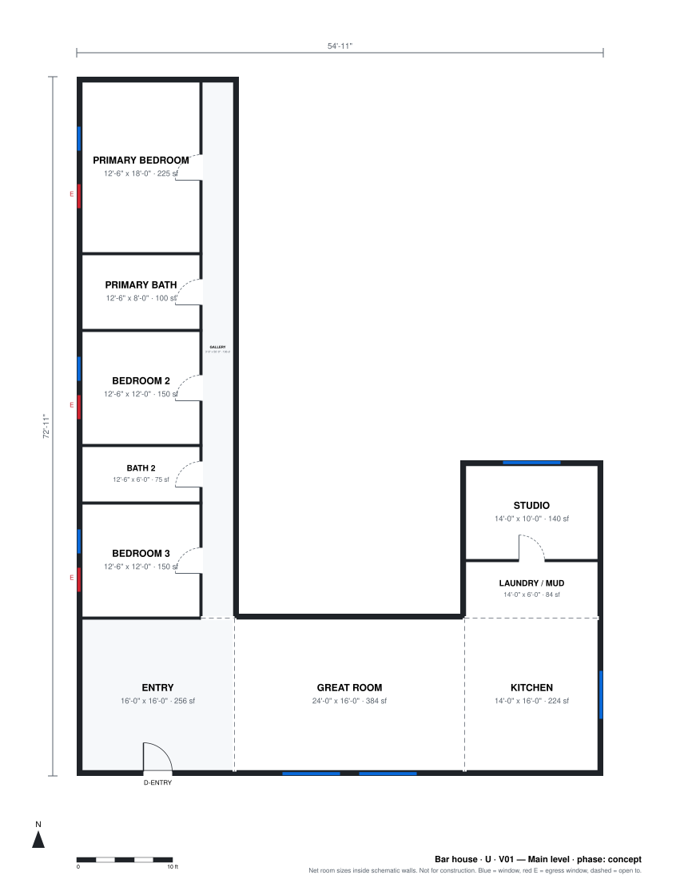

parti=U, living_depth_ft=14, sleeping_depth_ft=18, primary=far, garage=attached
aspect 1.03 · compactness 0.47 · shape_factor 6.11 · south_glazing 0.48 · circulation 0.23
warnings: C-LIGHT-1, SP-CIRC-1

parti=linear, living_depth_ft=14, sleeping_depth_ft=14, primary=near, garage=none
aspect 8.79 · compactness 1.00 · shape_factor 6.60 · south_glazing 0.90 · circulation 0.20
warnings: C-LIGHT-1

parti=L, living_depth_ft=18, sleeping_depth_ft=18, primary=near, garage=none
aspect 1.19 · compactness 0.50 · shape_factor 5.70 · south_glazing 0.48 · circulation 0.26
warnings: SP-CIRC-1

parti=linear, living_depth_ft=18, sleeping_depth_ft=18, primary=far, garage=attached
aspect 5.39 · compactness 1.00 · shape_factor 5.50 · south_glazing 0.90 · circulation 0.18
warnings: none

parti=U, living_depth_ft=14, sleeping_depth_ft=14, primary=near, garage=none
aspect 1.38 · compactness 0.43 · shape_factor 6.90 · south_glazing 0.41 · circulation 0.21
warnings: C-LIGHT-1, SP-CIRC-1

parti=L, living_depth_ft=14, sleeping_depth_ft=14, primary=far, garage=none
aspect 1.27 · compactness 0.36 · shape_factor 6.73 · south_glazing 0.48 · circulation 0.24
warnings: C-LIGHT-1, SP-CIRC-1